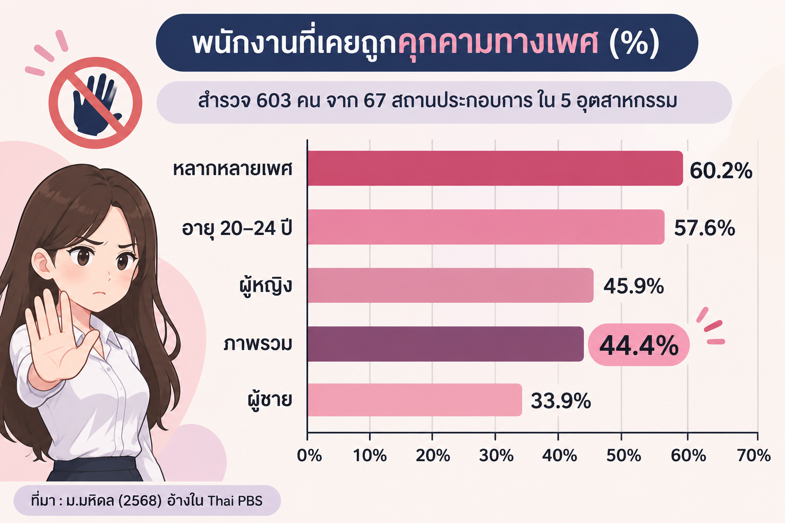

ความปลอดภัยในการทำงาน คือ การดูแลและจัดสภาพแวดล้อม ในสถานที่ทำงานให้ปลอดภัย ถูกสุขลักษณะ และลดความเสี่ยงจากอันตรายต่าง ๆ เพื่อปกป้องชีวิต ร่างกาย จิตใจ และสุขภาพอนามัยของลูกจ้าง
พระราชบัญญัติความปลอดภัย อาชีวอนามัย และสภาพแวดล้อมในการทำงาน พ.ศ. 2554 กำหนดให้นายจ้างจัดสภาพแวดล้อมการทำงาน ให้ปลอดภัยและถูกสุขลักษณะ เพื่อไม่ให้ลูกจ้างได้รับอันตรายต่อชีวิต ร่างกาย จิตใจ และสุขภาพอนามัย
คำว่า “จิตใจ” แสดงให้เห็นว่า ความปลอดภัยในการทำงานไม่ได้จำกัดอยู่เพียง การป้องกันอุบัติเหตุหรืออันตรายทางร่างกาย แต่ยังรวมถึงการป้องกันการคุกคามทางเพศ ซึ่งส่งผลต่อความรู้สึกและสุขภาพจิตของลูกจ้างด้วย
ดังนั้น การคุกคามทางเพศจึงเป็นเรื่อง ความปลอดภัยในการทำงาน ไม่ใช่เพียงเรื่องมารยาท
กรมสวัสดิการและคุ้มครองแรงงาน เป็นหน่วยงานหลักที่ดูแลด้านความปลอดภัย ในการทำงานของประเทศไทย
ในระดับสากล ประเทศไทยได้ให้สัตยาบัน อนุสัญญาองค์การแรงงานระหว่างประเทศ (ILO) ฉบับที่ 187 ว่าด้วยกรอบส่งเสริมความปลอดภัย และอาชีวอนามัย
การคุกคามทางเพศเป็นพฤติกรรมที่ละเมิดสิทธิ ศักดิ์ศรี และความปลอดภัยของผู้อื่น สามารถเกิดขึ้นได้ทั้งในสถานที่ทำงาน และผ่านช่องทางออนไลน์
ประมวลกฎหมายอาญา มาตรา 1 (19) ให้นิยามการคุกคามทางเพศว่าเป็นการกระทำ ทางกาย วาจา ท่าทาง การติดต่อสื่อสาร การเฝ้าดู ติดตาม หรือผ่านระบบออนไลน์ ที่มีลักษณะส่อไปทางเพศ
และน่าจะทำให้ผู้อื่นรำคาญ อับอาย ถูกเหยียดหยาม หวาดกลัว หรือไม่ปลอดภัยทางเพศ

จากการสำรวจกลุ่มพนักงานหญิงในหน่วยงานต่าง ๆ พบว่าประสบการณ์การคุกคามทางเพศที่พบมากที่สุด คือการถูกใช้วาจาลามก รองลงมาคือการถูกลวนลาม หรือแตะเนื้อต้องตัว
สะท้อนให้เห็นว่าการคุกคามทางเพศเกิดขึ้นได้ ทั้งผ่านคำพูดและการกระทำ ซึ่งส่งผลต่อความรู้สึก ความมั่นใจ และความปลอดภัยในการทำงาน
ที่มา: ม.มหิดล (2568) อ้างใน Thai PBS
ทุกคนควรได้รับความเคารพ และมีสิทธิทำงาน ในสภาพแวดล้อมที่ปลอดภัย โดยปราศจากการคุกคามทางเพศ